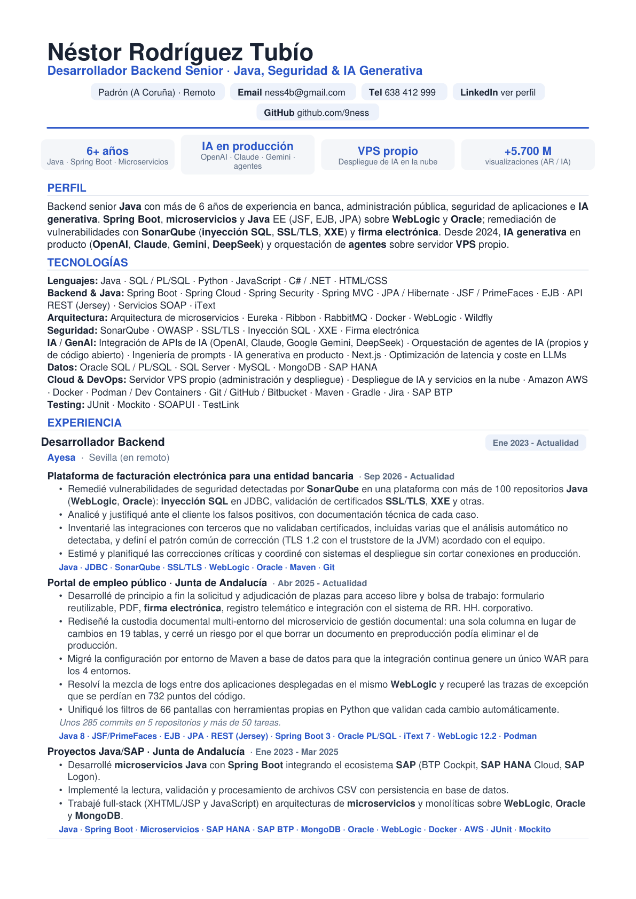

Backend senior Java con más de 6 años de experiencia en banca, administración pública, seguridad de aplicaciones e IA generativa (OpenAI, Claude, Gemini, DeepSeek), con VPS propio para desplegar IA en la nube.
Previsualización. Pulsa para abrir el PDF completo o descárgalo.

Desarrollador backend senior Java con más de 6 años de experiencia en banca, administración pública, ámbito judicial, automoción y sanidad. Construyo aplicaciones Java (Spring Boot, Java EE con JSF, EJB y JPA) sobre microservicios y monolitos en WebLogic y Oracle, y trabajo la seguridad de aplicaciones: remediación de vulnerabilidades detectadas por SonarQube (inyección SQL, validación de certificados SSL/TLS, XXE) y firma electrónica. Desde 2024 integro IA generativa con múltiples proveedores (OpenAI, Claude, Google Gemini, DeepSeek) y agentes en productos reales, y administro mi propio servidor VPS para desplegar IA en la nube.
¿Buscas un backend Java senior con experiencia real en IA? Escríbeme y te respondo en menos de 24h.